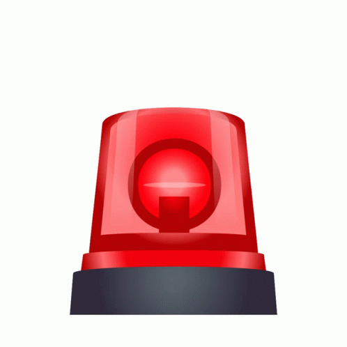

Home
Report
Emergency
Contacts
About

Emergency Reporting App
Report emergencies and get help quickly.
Emergency Reporting App
Urgent situations require immediate attention.
Use the siren button for quick Emergency report